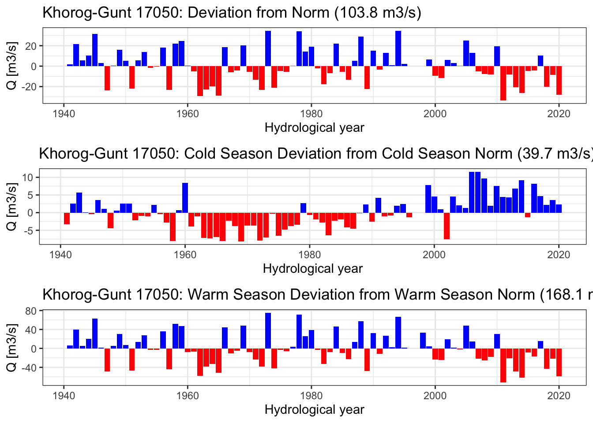

| StationName | StationCode | lat | lon | easting | northing | masl | type |
|---|---|---|---|---|---|---|---|
| Bulunkul | 38953 | 37.70417 | 72.94583 | 847890.5 | 4180325 | 3746 | Meteo |
| Khorog | 38954 | 37.50361 | 71.51500 | 722309.0 | 4153714 | 2075 | Meteo |
| Khorog | 17050 | 37.50361 | 71.51500 | 722309.0 | 4153714 | 2075 | Discharge Gauge |
| Javshangoz | 38956 | 37.39083 | 72.29583 | 791785.1 | 4143330 | 3438 | Meteo |
| Navobod | 38950 | 37.59417 | 71.86556 | 752995.5 | 4164650 | 2566 | Meteo |
2 Case Study River Basins
In this Chapter, two Central Asian river basins are presented. The purpose is twofold. On the one hand, students should become familiarized with key hydrological processes in the region and how catchments can be characterized from a hydro-meteorological perspective. On the other hand, the Chapter shows how the analysis of relevant data can be carried out in R and RStudio in an elegant way, including the analysis of geospatial data.
First, the Gunt river basin in the upper Pyandzh is presented. It is representative of a high mountain catchment in an arid to hyper-arid part of Central Asia, i.e. the Pamirs. Mostly because of its elevation, the catchment is largely untouched by human activity. In recent years, hydropower was developed in the of the basin in the lower reaches of the river which has led to alterations of the formerly natural flow regime. Because of its altitude and topography, there is only very little irrigation in the downstream part of the catchment at the valley floor.
Second the Chirchik river basin is presented. The Chirchik river is the largest right tributary to the Syr Darya and the vital source for freshwater supply of the Tashkent Oasis and its surroundings. The bulk of the water is utilized in irrigation in the downstream and some water is even diverted to neighboring catchments through interbasin water transfer. After the confluence of its main tributaries above the Charvak Reservoir, the river is heavily regulated for hydropower production and the supply of irrigation water in the downstream oases As of the beginning of 2022, there are new hydropower stations being built upstream of Charvak reservoir in both large tributaries, i.e. Chatkal and Pskem Rivers.

2.1 Gunt River Basin
2.1.1 Gunt Basin Characterization
The Gunt river basin is located in the Pamir mountains in the Gorno Badakhshan Autonomous Region in south-east Tajikistan. The basin covers approximately 14’000 km2. The Gunt river is a large right tributary of the upstream Pyandzh and joins the latter downstream of the town of Khorog. Mean elevation is approx 4’270 meters above mean sea level (masl) with an altitude range from 2’000 – 6’700 masl. The highest elevations in the catchment are Peak Karl Marx (6726 m) and Peak Engels (6510 m) at the southern border of the catchment.
Information on the available discharge and meteorological stations in the basin is provided in Table 2.1.
A map of the basin is provided in Figure 2.2.
Tip
If you want to experiment with the R code yourself, the data for this Chapter can be downloaded here. You can store these data locally and then perform the analysis on your local computer by correspondingly adjusting the data path in the code block below before loading the data.
data_dir <- "../caham_data/AmuDarya/gunt_data/geospatial"
# Load vector data (shapefiles)
gunt_basin_shp <- st_read(file.path(data_dir, "gunt_basin_shp.shp"), quiet = TRUE)
gunt_rivers_shp <- st_read(file.path(data_dir,"gunt_rivers_shp.shp"), quiet = TRUE)
gunt_subbasins_shp <- st_read(file.path(data_dir, "gunt_subbasins_shp.shp"), quiet = TRUE)
# Load raster data (.tif-files)
gunt_dem <- raster::raster(file.path(data_dir,"gunt_dem.tif"))
gunt_dem_hillshade <- raster::raster(file.path(data_dir,"gunt_dem_hillshade.tif"))After successfully loading the data, we can easily visualize it.
# Visualize data
tm_shape(gunt_dem_hillshade) +
tm_raster(palette = gray(0:100 / 100), n = 100, legend.show = FALSE) +
tm_shape(gunt_dem) +
tm_raster(alpha = 0.5, palette = terrain.colors(25), legend.show = TRUE, title = "Elevation (masl)") +
tm_shape(gunt_basin_shp) +
tm_polygons("area", alpha = 0, legend.show = FALSE) +
tm_shape(gunt_subbasins_shp) +
tm_polygons("ID", alpha = 0, legend.show = FALSE) +
tm_layout(legend.position = c("right","bottom")) +
tm_shape(gunt_rivers_shp) +
tm_lines(col = "name", scale = 3) +
tm_shape(meteo_stations_sf) +
tm_dots(col = "black", scale = 2) +
tm_shape(meteo_stations_sf) +
tm_text("StationName", size = .75, auto.placement = TRUE, just = "left")
The Table below summarizes key basin statistics that are relevant from the hydro-climatological perspective. Data from various sources are summarized here. These data are presented in Section II of the book in ?sec-data and discussed in great detail there.
The basin area has been derived from the basin shapefile. Raster statistics of the SRTM digital elevation model (srtmgl12020?), the climate raster files as well as the land cover raster are calculated using the QGIS Raster Layer Statistics processing toolbox algorithm. The land ice total polygon area is computed with the Statistical Summary Option in QGIS.
The norm hydrological year discharge and the corresponding norm cold and warm season discharge values have been computed with data from the Tajik Hydrometeorological Service. The mean basin precipitation is computed using a state-of-the-art bias corrected high-resolution reanalysis product Beck et al. (2020). Such data will also be used for hydro-climatological modeling in later Chapters. Potential evaporation is from (Trabucco and Zomer 2019) using the Penman-Montieth equation.
| ATTRIBUTE | VALUE |
|---|---|
| Geography (srtmgl12020?) | |
| Basin Area \(A\) | 13’693 km2 |
| Minimum Elevation \(h_{min}\) | 2’068 masl |
| Maximum Elevation \(h_{max}\) | 6’652 masl |
| Mean Elevation \(h_{mean}\) | 4’267 masl |
| Hydrology [Source: Tajik Hydromet Service] | |
| Norm hydrological year discharge \(Q_{norm}\) | 103.8 m3/s |
| Norm cold season discharge (Oct. - Mar., Q4/Q1) | 19.8 m3/s |
| Norm warm season discharge (Apr. - Sept., Q2/Q3) | 84.2 m3/s |
| Annual norm discharge volume | 3.28 km3 |
| Annual norm specific discharge | 239 mm |
| Climate | |
| Mean basin temperature \(T\) (Karger et al. 2017) | -5.96 deg. Celsius |
| Mean basin precipitation \(P\) (Beck et al. 2020) | 351 mm |
| Potential Evaporation \(E_{pot}\) (Trabucco and Zomer 2019) | 929 mm |
| Aridity Index \(\phi = E_{pot} / P\) | 2.7 |
| Aridity Index (Trabucco and Zomer 2019) | 3.6 |
| Land Cover (CopernicusLandCover?) | |
| Shrubland | 8 km2 |
| Herbaceous Vegetation | 4’241 km2 |
| Crop Land | 0.5 km2 |
| Built up | 4 km2 |
| Bare / Sparse Vegetation | 8’410 km2 |
| Snow and Ice | 969 km2 |
| Permanent Water Bodies | 80 km2 |
| Land Ice | |
| Total glacier area (glims2005?) | 875 km2 |
| Total glacier volume (calculated with (Erasov 1968)) | 699 km3 |
With the values provided in the table above, the discharge index \(Q/P\) is 68.5 % and the evaporative index \(E/P\) is 31.5 %. In other words, the long-term water balance shows that 3 precipitation units gets partitioned into 2 discharge units and 1 evaporation unit, approximately. The aridity index \(\phi\) , when calculated using \(P\) from (Karger et al. 2020) and \(E_{pot}\) from (Trabucco and Zomer 2019) is 2.7. The aridity index from (Trabucco and Zomer 2019) is 3.6. These values indicate some uncertainty in relation to the global climate products used. Despite this, they confirm the highly arid characteristics of the basin.
2.1.2 Gunt Basin Hydrology
For the analysis of the key hydro-climatological characteristics, we first load the available decadal and monthly station data1. The data used in this Chapter can be accessed downloaded from the following online repository.
First, we load the available station data of the Gunt River basin into R. Note that the monthly data is available for one discharge station and 4 meteorological stations. See also Table 2.1 for more information on the stations.
data_dir <- "../caham_data/AmuDarya/gunt_data/station_data/"
file_name = 'gunt_data_cleaned.Rds'
gunt_station_data <- read_rds(file.path(data_dir, file_name))
gunt_station_data# A tibble: 23,352 × 10
date data norm units type code station river basin resolution
<date> <dbl> <dbl> <chr> <chr> <chr> <chr> <chr> <chr> <fct>
1 1940-01-31 30.5 32.9 m3/s Q 17050 Gunt_Khorog Gunt Pyandz mon
2 1940-02-29 27.3 30.1 m3/s Q 17050 Gunt_Khorog Gunt Pyandz mon
3 1940-03-31 24.9 28.4 m3/s Q 17050 Gunt_Khorog Gunt Pyandz mon
4 1940-04-30 26.4 30.7 m3/s Q 17050 Gunt_Khorog Gunt Pyandz mon
5 1940-05-31 59 68.5 m3/s Q 17050 Gunt_Khorog Gunt Pyandz mon
6 1940-06-30 309 232. m3/s Q 17050 Gunt_Khorog Gunt Pyandz mon
7 1940-07-31 224 319. m3/s Q 17050 Gunt_Khorog Gunt Pyandz mon
8 1940-08-31 201 237. m3/s Q 17050 Gunt_Khorog Gunt Pyandz mon
9 1940-09-30 121 117. m3/s Q 17050 Gunt_Khorog Gunt Pyandz mon
10 1940-10-31 60.8 63.1 m3/s Q 17050 Gunt_Khorog Gunt Pyandz mon
# … with 23,342 more rowsThis dataframe now contains all available data hydro-meteorological data from the basin. Most data are available at monthly time scales. As an example, the monthly discharge data from Gauge 17050 can be accessed and extracted from the Gunt dataset in the following way.
q_17050_mon <- gunt_station_data %>% filter(type == "Q" & code == '17050' & resolution == 'mon')
q_17050_mon# A tibble: 972 × 10
date data norm units type code station river basin resolution
<date> <dbl> <dbl> <chr> <chr> <chr> <chr> <chr> <chr> <fct>
1 1940-01-31 30.5 32.9 m3/s Q 17050 Gunt_Khorog Gunt Pyandz mon
2 1940-02-29 27.3 30.1 m3/s Q 17050 Gunt_Khorog Gunt Pyandz mon
3 1940-03-31 24.9 28.4 m3/s Q 17050 Gunt_Khorog Gunt Pyandz mon
4 1940-04-30 26.4 30.7 m3/s Q 17050 Gunt_Khorog Gunt Pyandz mon
5 1940-05-31 59 68.5 m3/s Q 17050 Gunt_Khorog Gunt Pyandz mon
6 1940-06-30 309 232. m3/s Q 17050 Gunt_Khorog Gunt Pyandz mon
7 1940-07-31 224 319. m3/s Q 17050 Gunt_Khorog Gunt Pyandz mon
8 1940-08-31 201 237. m3/s Q 17050 Gunt_Khorog Gunt Pyandz mon
9 1940-09-30 121 117. m3/s Q 17050 Gunt_Khorog Gunt Pyandz mon
10 1940-10-31 60.8 63.1 m3/s Q 17050 Gunt_Khorog Gunt Pyandz mon
# … with 962 more rowsWhen we plot the data, we see that we have a near complete monthly record from 1940 onward (see Figure 2.3). The data gap in the 1990ies was during the Tajik civil war.
q_17050_mon %>%
plot_time_series(date,
data,
.smooth = FALSE,
.interactive = TRUE,
.title = "",
.x_lab = 'Year',
.y_lab = 'Mean monthly Q [m3/s]',
.plotly_slider = TRUE)There are visible changes in the winter low flow regime from 2007 onward. This is because of hydropower production that started upstream at that time. Pamir Energy, the local generation company supplies hydropower electricity especially during the cold winter months to the communities in the valley. When hydropower is required, the water table of the Yashikul Lake in the Pamir plateau (Alishur catchment, see Figure 2.2) gets lowered to increase the discharge for energy production in the downstream.
The seasonal diagnostics of the monthly discharge time series is shown in @ref(fig-gunt-seasonal-diagnostics). As is easily visible, the peak discharge of Gunt river measured at Khorog station is in July.
q_17050_mon %>%
plot_seasonal_diagnostics(.date_var = date,
.value = data,
.title = "",
.feature_set = c("month.lbl"),
.interactive = FALSE,
.x_lab = "Year",
.y_lab = "Mean monthly Q [m3/s]") +
scale_x_discrete(breaks = c("January", "February", "March", "April", "May",
"June", "July", "August", "September", "October",
"November", "December", "1", "2", "3", "4"),
labels = c("J", "F", "M", "A", "M", "J", "J", "A", "S", "O", "N", "D","1", "2", "3", "4"))
unlike in the lower lying Chirchik tributaries as shown in Figure 2.17 further below in Section 2.2.
Tip
Compare the discharge seasonality of Gunt River with the seasonality of the large and small Chirchik River tributaries? Obtain the information of all the other rivers in the Case Study packs and their seasonality. What is the single most important determinant of peak discharge timing in Central Asia rivers?
Below in Figure 2.6, we are plotting changes to monthly flows over time by binning all available data in the corresponding monthly slots. The red lines are linear regression lines that indicate trends for the individual months. Over the observational record of approx. 80 years, changes in monthly discharge regimes are clearly visible. On the one hand, summer discharge of Gunt river during the third quarter (Q3), i.e., July, August and September, is decreasing whereas the cold season discharge in Q1 and Q4 is increasing. This is a clear indication that the basin hydrology is undergoing changes over the long run. These could either be climate-related or, as discussed above, also the result of man-made interventions such as the regulation of river discharge for winter hydropower energy production. However, the shift of discharge from the warm season (Q2 and Q3) towards the cold season (Q4 and Q1) has already happened before river regulation started and hence, it is likely that we see a compound effect here.
q_17050_mon %>%
summarise_by_time(.date_var = date,
.by = "month",
value = mean(data)) %>%
tk_ts(frequency = 12) %>%
forecast::ggsubseriesplot(year.labels = FALSE) +
geom_smooth(method = "lm", color = "red") +
xlab('Month') +
ylab('Mean monthly Q [m3/s]')
Whenever we analyze annual data and changes therein, we should work with data as observed during the hydrological year. The hydrological year in Central Asia is defined as:
- monHY(Oct) = 1
- monHY(Nov) = 2
- …
- monHY(Sep) = 12
This also holds for meteorological data. Using this definition, we can further define cold and warm seasons easily where the cold season lasts from October through end of March (Q4 to Q1 the following year) and the warm season from April through end of September (Q2 and Q3). With this in mind, we can define the hydrological year discharge.
Given a time series of observations, the function convert2HYY() as part of the riversCentralAsia package provides a convenient way to compute hydrological year mean discharge, including for cold and warm seasons. For monthly mean temperatures mean(T), it computes hydrological year mean temperatures, including for cold and warm seasons. Finally, for precipitation, the function computes the hydrological year sum, including also for cold and warm season months. Figure 2.7 shows the discharge time series analysis for the Khorog gauging station.
qHYY <- q_17050_mon %>% convert2HYY(.,'17050','Q')
qHYY %>% pivot_longer(-hyYear) %>%
plot_time_series(hyYear,value,name,
.title = '',
.x_lab = 'Year',
.y_lab = 'Mean monthly Q [m3/s]',
.interactive = TRUE,
.smooth = FALSE)Figure 2.7 confirms the findings from the seasonal analysis. However, it also shows that the first two decades of the 21st century show a marked decline in total discharge as compared to the period between 1960 to 2000.
A common way to plot changes over time in hydro-meteorological time series is to plot annual deviations from corresponding long-term norms (long-term mean values). For this, we can use the plotNormDevHYY() function from the riversCentralAsia package. Given the three hydrological year annual time series, it computes long-term norms over the entire data set and subtracts actual annual values from the norm value. Like this, temporal changes and trends become even better visible. Figure 2.8 shows the results for the hydrological year data.
plotNormDevHYY(qHYY,'Q','Khorog-Gunt 17050')
Figure 2.8 shows that, in absolute terms, the discharge in the high-flow season is undergoing a much greater reduction than an increase in the low-flow season. Hence, we cannot simply explain the decline of discharge in one season with the increase in the other. In other words, the early melting of the winter snow pack cannot alone explain the summer decline in water availability. Some other mechanism much be at work which we still need to better understand. One hypothesis could be that an increase in summer temperatures leads to higher evaporation over the basin thus leading to reduced discharge (see also Section 2.1.3 below).
Also and as mentioned above, winter discharge is influence by human regulation after 2006. This needs to be carefully taken into account when carrying out climate change impact analysis over the period of the observational record. For example, the cold season discharge deviation from the norm in 2006 and 2007 is 10 m3/s (see Figure 2.8) indicating that this amount of additional water was used for hydropower energy production during the winter.
In order to gauge whether there is a robust trend in discharge over the observed time period, we compute decadal (10 year means) and plot the results.
mean10yearQ <- qHYY %>%
filter(hyYear < '2020-01-01') %>%
pivot_longer(-hyYear) %>%
group_by(name) %>%
summarise_by_time(hyYear,value, .by = "10 year", mean10yearQ = mean(value, na.rm = TRUE)) %>%
dplyr::select(-value) %>%
distinct() %>%
ungroup()
mean10yearQ %>% pivot_wider(names_from = name,values_from = mean10yearQ)# A tibble: 8 × 4
hyYear Q_mean_ann Q_mean_cs Q_mean_ws
<date> <dbl> <dbl> <dbl>
1 1940-01-01 111. 40.3 182.
2 1950-01-01 108. 39.0 177.
3 1960-01-01 96.2 35.7 156.
4 1970-01-01 105. 35.9 174.
5 1980-01-01 105. 37.5 171.
6 1990-01-01 114. 41.0 188.
7 2000-01-01 104. 43.8 165.
8 2010-01-01 94.2 44.7 143.mean10yearQ %>% plot_time_series(hyYear,mean10yearQ,name,
.smooth = FALSE,
.x_lab = "Year",
.y_lab = "Q [m^3/s]",
.title = "")This is informative. From the 1990ies onwards, a strong reduction in mean hydrological year warm season discharge is observed of about -16 % relative to the mean 1940 - 1989 values. At the same time, 10-year mean hydrological year cold season discharge remained almost stable. As already mentioned, such types of findings are the a key motivation to study possible climate impacts in such basins in greater detail with hydrological modeling.
2.1.3 Gunt Basin Climate
A significant amount of meteorological station data are available. Some of these data are analyzed in this Section. While we mostly concentrate on mean monthly data for temperature, we should note that the available data record also contains data on absolute and mean minimum and maximum temperatures.
# Extracting mean station data from the four stations.
Tmean_38954 <- gunt_station_data %>%
filter(code == "38954" & type == 'mean(T)') %>%
filter(date >= '1939-01-01') %>%
dplyr::select(date, data) %>%
rename(Tmean_38954 = data)
Tmean_38950 <- gunt_station_data %>%
filter(code == "38950" & type == 'mean(T)') %>%
filter(date >= '1939-01-01') %>%
dplyr::select(date, data) %>%
rename(Tmean_38950 = data)
Tmean_38953 <- gunt_station_data %>%
filter(code == "38953" & type == 'mean(T)') %>%
filter(date >= '1939-01-01') %>%
dplyr::select(date, data) %>%
rename(Tmean_38953 = data)
Tmean_38956 <- gunt_station_data %>%
filter(code == "38956" & type == 'mean(T)') %>%
filter(date >= '1939-01-01') %>%
dplyr::select(date, data) %>%
rename(Tmean_38956 = data)
# Assembling the data.
T <- full_join(Tmean_38950, Tmean_38953, by = "date")
T <- full_join(T, Tmean_38954, by = "date")
T <- full_join(T, Tmean_38956, by = "date")
# Plotting the dataframe
T %>% pivot_longer(-date) %>%
filter(date >= '1940-01-01') %>%
plot_time_series(date,
value,
name,
.smooth = FALSE,
.x_lab = 'Year',
.y_lab = 'Mean monthly T [deg. C]',
.title = "",
.interactive = TRUE)# add a month identifier
T <- T %>%
mutate(mon = month(date))Because of the high quality and the consistency of the long-term record of the data at Khorog station 39854, we focus the further climatological analysis there. Figure 2.11 shows deviations from norm mean temperatures over the last 120 years. The recent two decades stand out because of the pronounced warming observed at the station, especially during the cold season where norm deviations on average range between 1 - 2 degrees Celsius (deg. C.).
# Station Khorog 38954
meanTHYY_38954 <- gunt_station_data %>% convert2HYY(38954,'mean(T)') %>% filter(hyYear >= "1900-10-01")
meanTHYY_38954 %>% plotNormDevHYY(.,'mean(T)','Khorog 38954')
2.2 Chirchik River Basin
The Chirchik is a river in the Tashkent region of Uzbekistan. Its natural basin covers 13’112 km2, not accounting for the modern-time interbasin water transfers to the neighboring Akhangaran basin in the south (the outline of the basin is shown in Figure 2.12) and to the north. In terms of total runoff contribution, it is the biggest right tributary of the Syr Darya (see also further below in Section Section 2.2.1).
The river is formed by the confluence of the Chatkal and the Pskem rivers. They emerge at the south-western end of the Tien Shan mountains, i.e. the Talas Alatau, in the border region of Kyrgyzstan, Kazakhstan and Uzbekistan. The main tributaries are in clock-wise direction starting from north: Ugam, Pskem, Kosku and Chatkal. The Charvak reservoir receives water from these rivers. Ugam is the largest right tributary downstream of the reservoir and Aksak Ata the largest left-side tributary.
Below the Charvak hydroelectric power station, the river water gets diverted in numerous canals for irrigation in and around the Tashkent oasis and for interbasin water transfer to the Akhangaran basin in the south. As part of the Chirchik-Bozsuu cascade, several smaller dams along the river serve hydropower production and irrigation purposes.

Figure 2.12 shows a comprehensive overview of the Chirchik river basin and its tributaries as well as relevant modern gauging stations. Gauges are indicated with the semi-round shapes and the corresponding five digit official code as utilized by the Uzbek Hydrometeorological Service (HMS) indicated. The gauge 16924 is not a real gauge in the sense that reservoir inflow is not measured at one point but rather is calculated from all contributing tributary flow components, i.e. the Chatkal river, the Pskem river, Nauvalisoy and the Koksu River.
Koksu however, with a basin area of 392 km\(^2\), is ungauged. Its discharge contribution is calculated using an established empirical relationship between discharge in Chatkal River and discharge in Koksu. The empirical relationship is derived in Section Section 2.2.3. First, we now turn our attention to the description of key hydrological basin features.
2.2.1 Chirchik Basin Characterization
This Section available data to characterize the Chirchik River Basin from the hydro-climatological perspective. Data access and modeling is further described in Chapter ?sec-data in Part II and Part III ?sec-hydrological-modeling of this Book.
The available discharge data is shown in Figure 2.13. These are near complete historic records. See above Figure 2.12 for the station locations.
chirchik_river_data <- ChirchikRiverBasin
chirchik_river_data %>%
filter(type == 'Q') %>%
group_by(type,code,station,resolution) %>%
plot_time_series(date,
data,
.facet_ncol = 2,
.interactive = FALSE,
.smooth = FALSE,
.title = '')
The discharge measurements at Gazalkent gauge (number 16262) started already in 1900. It is one of the longest complete records available in Central Asia. The monthly record of the station is shown in Figure 2.14. You can zoom into the time series and investigate it in detail.
chirchik_river_data %>%
filter(code == '16262') %>%
plot_time_series(date,data,
.interactive = TRUE,
.smooth = FALSE,
.title = "",
.x_lab = 'date',
.y_lab = 'Discharge in cubic meters per second',
.plotly_slider = TRUE)As is easily visible, the June 1969 discharge was the historic monthly mean maximum with 1’220 m3/s. The time series features the typical snow-melt-driven runoff pattern with pronounced seasonality and interannual variability.
At Chinaz near the confluence of the Chirchik River with the Syr Darya (Gauge 16275), however, a changing discharge regime can be identified over time (see Figure 2.15). The drastic decrease in discharge there is due to two effects. First, water diversions and interbasin water transfers for irrigation purposes have greatly increased over the course of the 20th century. Second, the closure of the Charvak dam in 1974 and the subsequent filling of the dam decreased discharge during the filling period. Furthermore, the interannual variability of flows decreased from there onward due to the now regulated flow regime. This latter effect is also visible at the Gazalkent gauge (Figure 2.14). The non-stationarity in the discharge time series at these stations is thus explained by anthropogenic effects.
chirchik_river_data %>%
filter(code == '16275') %>%
plot_time_series(date,data,
.interactive = TRUE,
.smooth = FALSE,
.title = "",
.x_lab = 'date',
.y_lab = 'Discharge in cubic meters per second',
.plotly_slider = TRUE)The effect of water diversion becomes even more apparent when the annual discharge at Gazalkent gauging station upstream of any major water diversion and at Chinaz gauge, which is in the very downstream of Chirchik River right before its confluence with the Syr Darya, are compared. The corresponding annual time series are shown in Figure 2.16 together with the difference of the two time series.

Figure 2.16 shows the growing water allocation in the catchment from the 1930ies up to the end of the 20th century. Allocation grew almost 3-fold over this period. Interestingly, in the first decade of the 21st century, trends in allocation completely reversed and in 2009, roughly one third of the total flow at Gazalkent was allocated consumptively. The trend reversal might be due to a change in irrigation policy, problems with intake infrastructure between the two gauges, or both.
# A tibble: 7 × 5
# Groups: code [7]
code mean min max sd
<chr> <dbl> <dbl> <dbl> <dbl>
1 16262 229. 48.7 1220 186.
2 16275 105. 1.2 912 121
3 16279 116. 21.1 729 110.
4 16290 79.4 12.7 438 69.3
5 16298 3.8 0.9 21.1 2.8
6 16300 22.4 3.9 114 19.3
7 16924 205. 40.7 1231 183. | code | mean | min | max | sd |
|---|---|---|---|---|
| 16262 | 228.6 | 48.7 | 1220.0 | 186.4 |
| 16275 | 104.9 | 1.2 | 912.0 | 121.0 |
| 16279 | 115.7 | 21.1 | 729.0 | 109.9 |
| 16290 | 79.4 | 12.7 | 438.0 | 69.3 |
| 16298 | 3.8 | 0.9 | 21.1 | 2.8 |
| 16300 | 22.4 | 3.9 | 114.0 | 19.3 |
| 16924 | 205.3 | 40.7 | 1231.0 | 183.2 |
The largest left tributary to Chirchik below the Charvak reservoir Aksak Ata. The gauging station on the river got dismantled a long time ago. An average long-term mean discharge of 2.35 m\(^{3}\)/s is a solid estimated of its contribution to the overall discharge of Chirchik. Thus, if we add up long-term average discharge at Gazalkent and the one from Aksak Ata, we obtain an annual norm discharge (total average water availability) of 231 m\(^{3}\)/s.
Chirchik river is thus the biggest right-tributary of the Syr Darya. Chatkal river contributes exactly half to it (115.7 m\(^{3}\)/s) and Pskem river approximately one third (34.4 % or 79.4 m\(^{3}\)/s). Nauvalisoy is only a very small river with 1.6 % runoff contribution (3.8 m\(^{3}\)/s). From the available data, the long-term average runoff contribution by the ungauged Koksu river can be estimated to be 6.4 m\(^{3}\)/s or 2.8 %. Downstream of the reservoir, Ugam river contributes an additional 9.7 % (22.4 m\(^{3}\)/s) to the total flow.
Let us now turn our attention to the seasonality of the tributaries. We exclude both, the Chinaz Gauge and Gazalkent Gauge data in our analysis for the above-mentioned reason that flows there are no longer representing a natural runoff regimes but are influenced by human interference. For the analysis, we plot seasonalities of the key gauged and unregulated tributaries, i.e. Chatkal, Pskem, Nauvalisoy and Ugam rivers in Figure 2.17 and Figure 2.18 below.
chirchik_river_data %>%
filter(type == 'Q',
code != "16275",
code != "16262",
code != "16924",
code != "16298",
code != "16300") %>%
dplyr::select(date,data,code,river) %>%
group_by(code, river) %>%
plot_seasonal_diagnostics(.date_var = date,
.value = data,
.interactive = FALSE,
.feature_set = c("week","month.lbl"),
.title = "")Warning: Removed 108 rows containing non-finite values (stat_boxplot).
Discharge seasonality of the gauging stations downstream of Charvak reservoir is shown below. Note that we only have monthly values for Ugam station which explains the appearance of the weekly plot in the upper right panel of @ref(fig:seasonalitySmallTribs).
chirchik_river_data %>%
filter(type == 'Q',
code != "16275",
code != "16262",
code != "16924",
code != "16279",
code != "16290") %>%
dplyr::select(date,data,code,river) %>%
group_by(code, river) %>%
plot_seasonal_diagnostics(.date_var = date,
.value = data,
.interactive = FALSE,
.feature_set = c("week","month.lbl"),
.title = "")
The seasonality with the spring (small rivers) and summer (large tributaries) runoff peaks is striking in all the rivers. Nauvalisoy discharge peaks, on average, during or around week 20. Chatkal river discharge peaks around week 23 and Pskem river around week 26. These differences can be explained with the difference in mean catchment elevations which are as follows (ordered according to descending mean catchment elevation:
- Pskem Catchment: 2’795 masl,
- Chatkal catchment: 2’692 masl,
- Nauvalisoy catchment: 2’160 masl,
- Ugam catchment: 803 masl,
where Ugam is the lowest lying and Pskem catchment the highest catchment when measured according to mean catchment elevation. Figure 2.19 shows the hypsometric curves of the main tributaries to the Chirchik River.

Using a LOESS smoother, we can remove discharge time series seasonality and catch a glimpse of the underlying long-term trends. This is shown for gauging station 16294, i.e. the inflow to the Charvak Reservoir, in Figure 2.20. If anything, a slightly increasing trend in mean discharge can be observed over the last 40 years. We will further discuss this finding also in the context of the analysis of the meteorological data record in the next Section.
chirchik_river_data %>%
filter(code == "16924") %>%
dplyr::select(date, data, code, river) %>%
summarise_by_time(.date_var = date, .by = "month", value = mean(data)) %>%
plot_time_series(date,value)But what about changes for particular seasons and months? To understand these changes, we plot monthly average data grouped together individually for all months. Figure 2.21 shows the resulting graphs together with their best fit regression lines for each month. Several interesting observations can be done.
chirchik_river_data %>%
filter(code == "16924") %>%
dplyr::select(date, data, code, river) %>%
summarise_by_time(.date_var = date, .by = "month", value = mean(data)) %>%
tk_ts(frequency = 12) %>%
forecast::ggsubseriesplot(year.labels = FALSE) +
geom_smooth(method = "lm", color = "red") +
xlab('month') +
ylab('m^3/month')
First, cold season discharge in quarter 1 (Q1) and Q4 have a slightly increasing trend. Converse to this, the warm season quarterly trends are not uniform where Q2 trends are strongly increasing and Q3 trends are markedly decreasing. This is in line with what one would expect from a warming climate, i.e. that the snow-melt driven hydrograph peak flows shift in their timing towards earlier towards spring. At the same time, Q3 warm season discharge diminishes because of the earlier snow melt, assuming no changes in the precipitated water (compare also with the findings in ?sec-gunt-river-basin where a high elevation basin from the Pamir mountains is discussed). We will investigate the available climate and precipitation record of Chirchik River basin in the following section.

The development of the quarterly minimum, maximum and mean discharge Q over the years for Gauge 16924 (Charvak reservoir inflow) is shown in Figure 2.22. The increasing trends in cold season discharge (Q1 and Q4) is confirmed. In these quarters, minimum, mean and maximum discharges appear to increase with a probably link to temperature increases during these quarters (see Section 2.2.2 for a discussion). In Q2, minimum and mean discharges have an increasing trend. In Q3, maximum discharge appears to decrease over time.
2.2.2 Chirchik Basin Climate
Long-term climate data from three different stations located in the vicinity and upstream of Charvak Reservoir is available. The stations are meteorological stations 38642 and 38339, both in Pskem River Basin, station 38471, Chatkal River Basin and station 38464 in the vicinity of the Charvak Reservoir (see also Figure 2.12 above for the locations of these stations.
The raw temperature data is shown in Figure 2.23 whereas the per month temperature trends are shown in Figure 2.24 and Figure 2.25. At both stations, a significant cold season warning trend is visible.
chirchik_river_data %>%
filter(type == 'T') %>%
group_by(type,code,station,resolution) %>%
plot_time_series(date,
data,
.facet_ncol = 1,
.interactive = FALSE,
.smooth = TRUE,
.title = '')
chirchik_river_data %>%
filter(type == "T" & code == "38462") %>%
dplyr::select(date,data,code,river) %>%
summarise_by_time(.date_var = date, .by = "month", value = mean(data)) %>%
tk_ts(frequency = 12) %>%
forecast::ggsubseriesplot(year.labels = FALSE) +
geom_smooth(method = "lm", color = "red") +
xlab('month') +
ylab('deg. C.')
chirchik_river_data %>%
filter(type == "T" & code == "38471") %>%
dplyr::select(date, data, code, river) %>%
summarise_by_time(.date_var = date, .by = "month", value = mean(data)) %>%
tk_ts(frequency = 12) %>%
forecast::ggsubseriesplot(year.labels = FALSE) +
geom_smooth(method = "lm", color = "red") +
xlab('month') +
ylab('deg. C.')
The increasing cold season temperatures have an impact on the snow fractions in the basins, i.e., on the fraction falling as solid precipitation versus total precipitation. Generally speaking, warming winter temperatures will lead to an increase in elevation of the snowline and thus reduce the area and volume of the winter snow deposits.
Similarly to the analysis carried out above for the development of quarterly flows, we can analyze the development of quarterly temperature statistics. Figure 2.26 shows the results.
Code
quarterT_mean <- chirchik_river_data %>%
filter(type == "T" & code == "38471") %>%
dplyr::select(date, data, code, river) %>%
summarise_by_time(.date_var = date, .by = "quarter",value = mean(data, na.rm = TRUE)) %>%
rename(mean = value) %>%
na.omit()
quarterT_max <- chirchik_river_data %>%
filter(type == "T" & code == "38471") %>%
dplyr::select(date,data,code,river) %>%
summarise_by_time(.date_var = date, .by = "quarter",value = max(data, na.rm = TRUE)) %>%
rename(max = value) %>%
na.omit()
quarterT_min <- chirchik_river_data %>%
filter(type == "T" & code == "38471") %>%
dplyr::select(date, data, code, river) %>%
summarise_by_time(.date_var = date,.by = "quarter",value = min(data, na.rm = TRUE)) %>%
rename(min = value) %>% na.omit()
quarterT <- left_join(quarterT_mean, quarterT_max, by = 'date')
quarterT <- left_join(quarterT, quarterT_min, by = 'date')
quarterT <-
bind_cols(quarterT, quarterT$date %>%
tsibble::yearquarter()) %>%
rename(quarter = '...5')
quarterT$quarter <- quarterT$quarter %>%
format(., format = "Q%q")
<<<<<<< HEAD
q1T <- quarterT %>% filter(quarter == 'Q1') %>% dplyr::select(-quarter) %>% pivot_longer(-date)
q2T <- quarterT %>% filter(quarter == 'Q2') %>% dplyr::select(-quarter) %>% pivot_longer(-date)
q3T <- quarterT %>% filter(quarter == 'Q3') %>% dplyr::select(-quarter) %>% pivot_longer(-date)
q4T <- quarterT %>% filter(quarter == 'Q4') %>% dplyr::select(-quarter) %>% pivot_longer(-date)
=======
Gunt and Chirchik River basins are discussed here in the subsections.
3.1 Gunt River Basin
3.2 Chirchik River Basin
>>>>>>> master
pQ1 <- q1T %>%
plot_time_series(.date_var = date,.value = value,.color_var = name,
.smooth = TRUE, .smooth_degree = 1, .smooth_period = 'auto',.title = "Q1", .interactive = FALSE, .facet_ncol = 1,
.x_lab = "year", .y_lab = "deg. C.",.legend_show = TRUE)
pQ2 <- q2T %>%
plot_time_series(date,value,name,
.smooth = TRUE, .smooth_degree = 1, .smooth_period = 'auto',.title = "Q2", .interactive = FALSE, .facet_ncol = 1,
.x_lab = "year",.y_lab = "deg. C.",.legend_show = FALSE)
pQ3 <- q3T %>%
plot_time_series(date,value,name,
.smooth = TRUE, .smooth_degree = 1, .smooth_period = 'auto',.title = "Q3", .interactive = FALSE, .facet_ncol = 1,
.x_lab = "year",.y_lab = "deg. C.", .legend_show = FALSE)
pQ4 <- q4T %>% na.omit() %>%
plot_time_series(date,value,name,
.smooth = TRUE, .smooth_degree = 1, .smooth_period = 'auto',.title = "Q4", .interactive = FALSE, .facet_ncol = 1,
.x_lab = "year",.y_lab = "deg. C.",.legend_show = FALSE)
pQ1 + pQ2 + pQ3 + pQ4 + plot_layout(guides = 'collect') & theme(legend.position = 'bottom') 
Apart from a generally increasing trend in temperature, especially in the cold seasons, there are also significant positive anomalies since the year 2000 at Station 38462 in the maximum winter (Q1) temperatures. Changes in the fraction of precipitation falling as snow are expected under such developments.
We can in fact compute these changes with high resolution daily climate fields that are nowadays available (see Karger et al. (2017), Karger et al. (2020) and Karger et al. (2021) and also more on these in ?sec-data). Figure 2.27 shows the corresponding results.

The atmospheric warming between 1980 and 2011 (this is period for which daily precipitation and temperature fields are available at 1 km2 resolution) has lead to a reduction of the fraction of the total precipitation falling as snow between 5 - 24 % within the elevation range from 800 masl to 1’500 masl, approx. Changes for pixels where the trend is not significant at the 95 % confidence level are not shown, i.e., they are transparent. In the region shown, no significant positive trends could be identified over the period of consideration. Finally, at higher elevations in the Chirchik River basin, no significant changes can be seen in most places.
Now we look into the development of precipitation over the available record of station data.
chirchik_river_data %>%
filter(type == 'P') %>%
group_by(type,code,station,resolution) %>%
plot_time_series(date,
data,
.facet_ncol = 1,
.interactive = FALSE,
.smooth = FALSE,
.title = '')
Code
quarterP_mean <- chirchik_river_data %>%
filter(type == "P" & code == "38464") %>%
dplyr::select(date,data,code,river) %>%
summarise_by_time(.date_var = date, .by = "quarter",value = mean(data,na.rm = TRUE)) %>%
rename(mean = value) %>% na.omit()
quarterP_max <- chirchik_river_data %>%
filter(type == "P" & code == "38464") %>%
dplyr::select(date,data,code,river) %>%
summarise_by_time(.date_var = date, .by = "quarter",value = max(data,na.rm = TRUE)) %>%
rename(max = value) %>% na.omit()
quarterP_min <- chirchik_river_data %>%
filter(type == "P" & code == "38464") %>%
dplyr::select(date,data,code,river) %>%
summarise_by_time(.date_var = date,.by = "quarter",value = min(data,na.rm = TRUE)) %>%
rename(min = value) %>% na.omit()
quarterP <- left_join(quarterP_mean, quarterP_max, by = 'date')
quarterP <- left_join(quarterP, quarterP_min, by = 'date')
quarterP <-
bind_cols(quarterP,quarterP$date %>%
tsibble::yearquarter()) %>%
rename(quarter = '...5')
quarterP$quarter <- quarterP$quarter %>%
format(., format = "Q%q")
q1P <- quarterP %>% filter(quarter == 'Q1') %>% dplyr::select(-quarter) %>% pivot_longer(-date)
q2P <- quarterP %>% filter(quarter == 'Q2') %>% dplyr::select(-quarter) %>% pivot_longer(-date)
q3P <- quarterP %>% filter(quarter == 'Q3') %>% dplyr::select(-quarter) %>% pivot_longer(-date)
q4P <- quarterP %>% filter(quarter == 'Q4') %>% dplyr::select(-quarter) %>% pivot_longer(-date)
pQ1 <- q1P %>% #group_by(name) %>%
plot_time_series(date,value,name,
.smooth = TRUE, .smooth_degree = 1, .smooth_period = 'auto',
.title = "Q1", .interactive = FALSE, .facet_ncol = 1,
.x_lab = "year", .y_lab = "mm / 10 days",.legend_show = TRUE
)
pQ2 <- q2P %>% #group_by(name) %>%
plot_time_series(date,value,name,
.smooth = TRUE, .smooth_degree = 1, .smooth_period = 'auto',
.title = "Q2", .interactive = FALSE, .facet_ncol = 1,
.x_lab = "year",.y_lab = "mm / 10 days",.legend_show = FALSE
)
pQ3 <- q3P %>% #group_by(name) %>%
plot_time_series(date,value,name,
.smooth = TRUE, .smooth_degree = 1, .smooth_period = 'auto',
.title = "Q3", .interactive = FALSE, .facet_ncol = 1,
.x_lab = "year",.y_lab = "mm / 10 days", .legend_show = FALSE
)
pQ4 <- q4P %>% na.omit() %>% #group_by(name) %>%
plot_time_series(date,value,name,
.smooth = TRUE, .smooth_degree = 1, .smooth_period = 'auto',
.title = "Q4", .interactive = FALSE, .facet_ncol = 1,
.x_lab = "year",.y_lab = "mm / 10 days",.legend_show = FALSE
)
pQ1 + pQ2 + pQ3 + pQ4 + plot_layout(guides = 'collect') & theme(legend.position = 'bottom')Figure 2.29 shows that at the meteorological station 38462, precipitation levels have been increasing until the 1980ies for Q3 and Q4. Contrary to that, there is a slightly increasing trend in Q1 since the year 2000.
In summary, the general global warming trend is clearly visible in in-situ station records as well as in high-resolution climatologies. As our quick analyis of the changes in snow cover fractions show, the warming translates into less snow cover in intermediate elevation ranges but not in the high-mountain zones where the critical snow storage for warm season runoff is found. This might be one of the possible explanations that we do not see any reduction in observed discharge in the basin.
2.2.3 Discharge Estimation from the Ungauged Kosku Tributary
The construction of the Charvak reservoir and the subsequent water impoundment of the rivers water in the reservoir led to a destruction of the previous gauge that measured Chatkal discharge, including the contribution from the Koksu right-tributary. To be able to estimate the Koksu discharge contribution to the Charvak reservoir, even after the impoundment, an empirical relationship between Chatkal river discharge and Koksu was established. The procedure allows for the more or less precise estimation of Koksu discharge, even in the absence of direct measurements, as described below.
Note
The model shown here to estimate Koksu discharge using measured quantities at Khudaydod is a simple type of an empirical model. You will learn more about such types of models in Section 10.
Before the closure of the Charvak dam and the subsequent filling of the reservoir in and after 1974, the Uzbek experts from the Hydrometeorological Agency started a detailed 3-years measurement comparison campaign at Charvak gauge and at gauge 16279 in Khudaydod (see Figure 2.12). Both are located on Chatkal river
The confluence of Koksu river with Charvak river is just upstream of the former Charvak gauge and hence between gauge 16279 and the former Charvak gauge. Using daily data from the measurement comparisons campaign, Charvak gauge discharge was related to Khudaydod discharge using a linear relationship. At the same time, they were now able to relate Koksu discharge to the discharge at Chatkal River in Khudaydod as shown in Equation 2.1.
\[ Q_{Koksu} \propto Q_{Charvak} - Q_{16279} \qquad(2.1)\]
We show the procedure here. After loading the riversCentralAsia Package as shown above, the relevant daily data from 01/01/1965 - 31/12/1967 can be loaded as follows (the data was kindly provided by Mr. Andrey Yakovlev).
data_koksu_discharge_derivation <- riversCentralAsia:::KoksuDischargeDerivation # load Data
data_koksu_discharge_derivation# A tibble: 1,976 × 4
date data code units
<date> <dbl> <chr> <chr>
1 1965-01-01 35.6 Charvak m3/s
2 1965-01-02 35.6 Charvak m3/s
3 1965-01-03 33 Charvak m3/s
4 1965-01-04 33 Charvak m3/s
5 1965-01-05 33 Charvak m3/s
6 1965-01-06 33 Charvak m3/s
7 1965-01-07 34.3 Charvak m3/s
8 1965-01-08 35.6 Charvak m3/s
9 1965-01-09 38.4 Charvak m3/s
10 1965-01-10 35.6 Charvak m3/s
# … with 1,966 more rowsThe data is stored in long format, meaning that measurements in time and for the two gauging stations are just stacked on top of each other in one long table with a total of 1’976 measurement points. For the purpose here, we prefer the wide format where we have one date column with unique dates and then the data listed for each station in corresponding columns.
data_koksu_discharge_derivation_wide <- data_koksu_discharge_derivation %>% pivot_wider(id_cols = 'date',values_from = 'data',names_from = "code")
data_koksu_discharge_derivation_wide# A tibble: 988 × 3
date Charvak `16279`
<date> <dbl> <dbl>
1 1965-01-01 35.6 33.4
2 1965-01-02 35.6 32.4
3 1965-01-03 33 30.4
4 1965-01-04 33 29.4
5 1965-01-05 33 30.4
6 1965-01-06 33 30.4
7 1965-01-07 34.3 31.4
8 1965-01-08 35.6 32.4
9 1965-01-09 38.4 34.4
10 1965-01-10 35.6 32.4
# … with 978 more rowsThe runoff contribution of Koksu can be calculated in a simple manner.
# Adding Koksu discharge to the dataframe
data_koksu_discharge_derivation_wide <- data_koksu_discharge_derivation_wide %>% mutate(Koksu = Charvak - `16279`)
data_koksu_discharge_derivation_wide# A tibble: 988 × 4
date Charvak `16279` Koksu
<date> <dbl> <dbl> <dbl>
1 1965-01-01 35.6 33.4 2.20
2 1965-01-02 35.6 32.4 3.20
3 1965-01-03 33 30.4 2.6
4 1965-01-04 33 29.4 3.6
5 1965-01-05 33 30.4 2.6
6 1965-01-06 33 30.4 2.6
7 1965-01-07 34.3 31.4 2.9
8 1965-01-08 35.6 32.4 3.20
9 1965-01-09 38.4 34.4 4
10 1965-01-10 35.6 32.4 3.20
# … with 978 more rowsThe relationship can now be visualized as shown in Figure 2.30.
ggplot(data_koksu_discharge_derivation_wide, aes(`16279`, Koksu)) +
geom_point() +
xlab(bquote('Discharge at Gauge 16279 Khudaydod in '~m^3/s)) +
ylab (bquote('Koksu river discharge in '~m^3/s))
::: {callout icon=false} The relation between Chatkal River discharge and Koksu River discharge is remarkable, despite the complex mountain terrain from which these neighboring rivers emerge. Can you think of reasons why this is so? How do you explain outlier data? Hint: To answer these questions, you might want to consult @#sec-hydrological-systems. :::
We can perform a linear regression to related discharge at Khudaydod to the one at Koksu. The coefficients of the linear regression can be obtained in the following way:
Call:
lm(formula = Koksu ~ 0 + `16279`, data = data_koksu_discharge_derivation_wide)
Residuals:
Min 1Q Median 3Q Max
-38.295 -5.867 -1.918 1.416 120.419
Coefficients:
Estimate Std. Error t value Pr(>|t|)
`16279` 0.14469 0.00298 48.55 <2e-16 ***
---
Signif. codes: 0 '***' 0.001 '**' 0.01 '*' 0.05 '.' 0.1 ' ' 1
Residual standard error: 12.4 on 987 degrees of freedom
Multiple R-squared: 0.7049, Adjusted R-squared: 0.7046
F-statistic: 2357 on 1 and 987 DF, p-value: < 2.2e-16Please note, in the specification of the linear model we add the 0 term to force the regression through the origin. Hence, the discharge contribution of Koksu River is estimated to be
\[ Q_{Koksu} = 0.145 * Q_{Khudaydod} \qquad(2.2)\]
The resulting model can easily be visualized as is shown in Figure 2.31.
ggplot(data_koksu_discharge_derivation_wide, aes(`16279`, Koksu)) +
geom_point() +
geom_smooth(method = "lm", se = FALSE, formula = y~0+x) +
xlab(bquote('Discharge at Gauge 16279 Khudaydod in '~m^3/s)) +
ylab(bquote('Koksu river discharge in '~m^3/s))
Beck, Hylke E., Eric F. Wood, Tim R. McVicar, Mauricio Zambrano-Bigiarini, Camila Alvarez-Garreton, Oscar M. Baez-Villanueva, Justin Sheffield, and Dirk N. Karger. 2020. “Bias Correction of Global High-Resolution Precipitation Climatologies Using Streamflow Observations from 9372 Catchments.” Journal of Climate 33 (4): 1299–1315. https://doi.org/10.1175/JCLI-D-19-0332.1.
Erasov, N. V. 1968. “Method for Determining of Volume of Mountain Glaciers.” MGI, no. 14: 307–8.
Karger, Dirk Nikolaus, Olaf Conrad, Jürgen Böhner, Tobias Kawohl, Holger Kreft, Rodrigo Wilber Soria-Auza, Niklaus E. Zimmermann, H. Peter Linder, and Michael Kessler. 2017. “Climatologies at high resolution for the earth’s land surface areas.” Scientific Data 4 (1): 170122. https://doi.org/10.1038/sdata.2017.122.
Karger, Dirk Nikolaus, Dirk R. Schmatz, Gabriel Dettling, and Niklaus E. Zimmermann. 2020. “High-resolution monthly precipitation and temperature time series from 2006 to 2100.” Scientific Data 7 (1): 248. https://doi.org/10.1038/s41597-020-00587-y.
Karger, Dirk Nikolaus, Adam M. Wilson, Colin Mahony, Niklaus E. Zimmermann, and Walter Jetz. 2021. “Global daily 1 km land surface precipitation based on cloud cover-informed downscaling.” Scientific Data 8 (1): 307. https://doi.org/10.1038/s41597-021-01084-6.
Trabucco, Antonio, and Robert Zomer. 2019. “Global Aridity Index and Potential Evapotranspiration (ET0) Climate Database v2,” January. https://doi.org/10.6084/m9.figshare.7504448.v3.
The data was kindly provided by the Tajik Hydrometeorological Agency located in Dushanbe, Tajikistan.↩︎